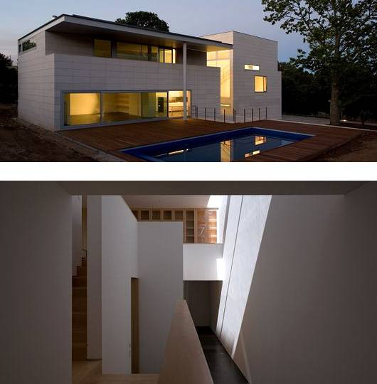

INMOBILIARIA UNC WEB 2008
Propiedades
Inmobiliaria UNC es una empresa dedicada a brindar soluciones integrales en el mercado inmobiliario, destacándose por su compromiso, transparencia y cercanía con cada cliente. Su objetivo principal es acompañar a las personas en uno de los momentos más importantes: encontrar el lugar ideal para vivir o invertir.
Ofrece servicios de compra, venta y alquiler de propiedades, adaptándose a las necesidades de cada cliente con asesoramiento personalizado. Además, se caracteriza por su profesionalismo, conocimiento del mercado y atención detallada en cada etapa del proceso.
Inmobiliaria UNC busca generar confianza y seguridad, construyendo relaciones duraderas y garantizando una experiencia simple, clara y efectiva en cada operación.
Propiedad 1
Propiedad 2
Propiedad 3



Ubicación: Zona residencial tranquila
Superficie: 180 m²
Habitaciones: 3
Descripción: Moderna casa con excelente iluminación, jardín y pileta.
Ubicación: Zona de montaña
Superficie: 220 m²
Habitaciones: 4
Descripción: Cabaña rústica rodeada de naturaleza, ideal para descanso.
Ubicación: Área boscosa
Superficie: 200 m²
Habitaciones: 3
Descripción: Vivienda cálida de piedra y madera con entorno natural.
Inmobiliaria UNC
Dirección: Av. Argentina 1234, Neuquén, Argentina
Email: contacto@inmobiliariaunc.com
Teléfono: +54 299 456 7890